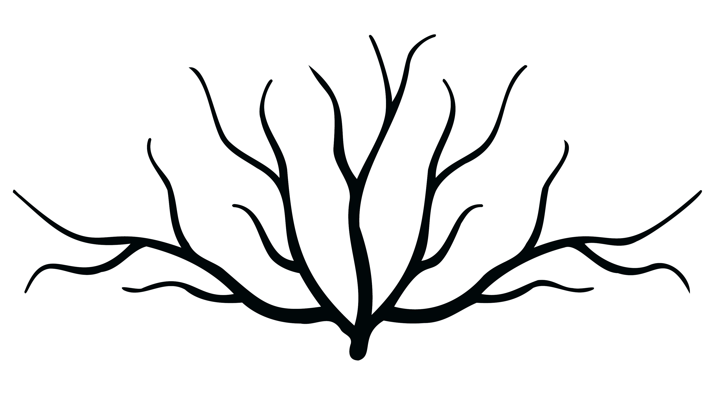
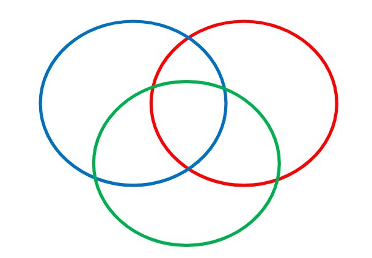

- Home
- Lessico generale
- Tutti i vocaboli
- S= sostantivo
- V= verbo
- Agg= aggettivo
- Avv= avverbio
- Part= participio
- I= interiezione
- Met= significato metaforico
- Concr= significato concreto
- Trasl= significato traslato
- Est= per estensione
- Sost= sostantivato
- Ant= per antonomasia

Esplora il lessico per radici
Vai a lessico per radici

Esplora il lessico per campo semantico
Vai a lessico per campo semantico
Vuoi sapere di più su alcuni termini?
Vai al Glossario
Visualizza il catalogo delle opere
Vai a Catalogo testi
Vuoi sapere di più sull'autore?
Vai alla sezione autoreTutti i vocaboli
Α
Ἀγάθων (Th 29-31, 65, 88, 95)= s: Agatone, tragediografo famoso e importante, contemporaneo di Aristofane, dileggiato per effeminatezza.
ἀγγελία (Ach 1083)= s: messaggio, annuncio, responso.
ἀγγέλλω (Ach 1070, 1077, 1083-4)= v: annunciare, proclamare, dare un messaggio.
ἄγλις (Ach 763)= s: testa d'aglio, spicchio d'aglio.
ἀγορά (Ach 21, 533, 719, 728-9, 838, 848, 854, 877, 896)= s: agorà, piazza cittadina, assemblea, mercato.
ἀγοράζω (Ach 625, 720, 750)= v: frequentare l'agorà, comprare, commerciare.
ἀγορανόμος (Ach 723, 824, 968)= s: agoranomo, ispettore del mercato.
ἀγορεύω (Ach 41, 45)= v: dire, parlare pubblicamente.
ἀγροικότονος (Ach 674)= agg: dal suono campestre. Composto formato da ἄγροικος (campestre) e τόνος (suono, musica, accento).
ἀγροιώτης (Th 58)= s/agg: rustico, contadino, campagnolo, est. villano, rozzo.
ἀγρός (Ach 32)= s: concr. campo, est. campagna.
ἀγών (Ach 392, 481, 504)= s: contesa, scontro, gara, processo.
ἀγωνίζομαι (Ach 140, 419, 481)= v: gareggiare, competere, partecipare ad un agone teatrale.
ἄδειπνος (Ach 1152)= agg: senza cena, digiuno, senza pasto.
ᾄδω (Ach 261, 979, 1231-2)= v: cantare.
ἀθάνατος (Ach 47, 51)= s/agg: immortale.
Ἅιδης (Ach 390)= s: Ade, dio dell'oltretomba, fratello di Zeus.
Αἰθήρ (Th 14)= s: Etere, personificazione divina dell'etere, probabilmente qui citata come uno dei ἰδιῶται θεοί (dei privati) di Euripide per schernire i suoi interessi cosmogonici.
αἴλουρος (Ach 879)= s: gatto.
Αἰσχύλος (Ach 10)= s: Eschilo, tragediografo ateniese di spicco.
ἄκρατος (Ach 1229)= agg: schietto, non mescolato, est. puro, assoluto.
ἀκρίς (Ach 1116-7)= s: cavalletta, grillo.
ἀλαζόνευμα (Ach 63, 87)= s: fanfaronata, spacconata, buffonata.
ἀλαζών (Ach 109, 135, 374)= s: ciarlatano, imbroglione.
ἀλλᾶς (Ach 146)= s: salsiccia, sanguinaccio.
ἀλώπηξ (Ach 878)= s: volpe.
ἅλς (Ach 521, 750, 772, 814, 831, 1099)= s: sale, est. mare.
ἀμβροσία (Ach 196)= s: ambrosia, cibo degli dei.
ἄμπελος (Ach 183, 232, 512, 987, 995)= s: vite, vite selvatica, vigna.
ἄμυλος (Ach 1092)= s: focaccia.
ἄμυστις (Ach 1229)= s: lungo sorso, grande coppa.
Ἀμφίθεος (Ach 46-7, 129, 175-6)= s: Anfiteo, nome parlante composto da ἀμφί (attorno) e θεός (dio) che indica la pretesa discendenza divina da ambo le parti.
ἀναβράσσω (Ach 1005)= v: bollire, lessare.
ἀναγορεύω (Ach 11)= v: annunciare pubblicamente, proclamare.
ἀναίσχυντος (Ach 289, 491)= agg: sfrontato, impudente.
ἀνακράζω (Ach 182)= v: gridare.
ἀνάπαιστος (Ach 627)= s: anapesto, tipologia di verso.
ἀνδράριον (Ach 517)= s: omuncolo, ometto.
ἄνθραξ (Ach 34, 212, 332, 348, 667, 891)= s: carbone, carbonella, antrace.
ἀνταποκτείνω (Ach 326)= v: uccidere in cambio, uccidere come risposta.
Ἀντίμαχος (Ach 1150)= s: Antimaco, corega.
ἀντονομάζω (Th 55)= v: chiamare con nome diverso, denominare invece, usare l'antonomasia, fare figure retoriche, indicare col pronome.
ἄξιος (Ach 4, 8, 205)= agg: degno, giusto.
ἀπάρχω (Ach 244)= v: regnare lontano, iniziare un sacrificio con un'offerta, offrire primizie.
ἀπεμπολάω (Ach 374)= v: vendere, tradire.
ἀποθριάζω (Ach 62)= v: lett. strappare le foglie di fico, met. scappellare, circoncidere.
ἀποθνῄσκω (Ach 15, 348)= v: morire.
ἀπόλλυμι (Ach 151, 174, 295, 333, 336, 473, 476; Th 2, 77, 81)= v: mandare in rovina, distruggere, far perire, uccidere, perdere.
Ἀπόλλων (Ach 59, 101)= s: Apollo, dio dell'arte, della poesia, del sole, della medicina.
ἀπόπατος (Ach 81)= s: escremento, est. cesso, latrina.
ἀποψωλέω (Ach 161, 592)= v: scappellare.
ἄπρατος (Ach 743)= agg: invenduto, non prostituito.
Ἁρμόδιος (Ach 980, 1093)= s: Armodio, uno dei tirannicidi.
Ἀρτέμων (Ach 850)= s: Artemone, musico.
ἄρχων (Ach 67)= s: arconte, magistrato.
ἄσκωμα (Ach 97)= s: guaina di cuoio, fodero di cuoio, est. rigonfiamento.
ἀσκός (Ach 549, 1002, 1225, 1230)= s: cuoio, pelle, otre.
Ἀσπασία (Ach 527)= s: Aspasia, compagna di Pericle per lungo tempo, etera.
ἀσπίς (Ach 58, 279, 539, 966, 1122, 1124, 1136, 1140, 1181)= s: scudo.
ἀστεῖος (Ach 811)= agg: cittadino, urbano, educato, raffinato.
ἀστός (Ach 508)= s/agg: cittadino.
ἄστυ (Ach 33)= s: fortezza, cittadella fortificata, est. città.
ἄτιμος (Ach 517)= agg: disonorevole, disonorato, ignobile.
ἀτταγᾶς (Ach 875)= s: francolino.
αὐλητής (Ach 862)= s: flautista.
αὐλητρίς (Ach 551)= s: flautista.
αὐλός (Ach 554, 752)= s: flauto.
Ἀφροδίτη (Ach 792-4)= s: Afrodite, dea dell'amore e della bellezza, nata dalla spuma del mare e moglie di Efesto.
ἀφύη (Ach 640, 901-2)= s: avannotto, acciuga, sardina.
ἀχάνη (Ach 108-9)= s: acana(misura beotica e persiana), cesto, paniere.
ἄχθομαι (Ach 62, 1100)= v: essere carico, met. essere oppresso, irritato, soffrire.
ἄχυρα (Ach 508)= s: scarto, crusca, pula.
Β
Βάκχος (Ach 263)= s: Bacco, altro nome di Dioniso.
βάρβαρος (Ach 168)= s/agg: lett. chi balbetta quando parla greco, barbaro, straniero.
βασίλεια (Ach 80)= s: concr. reggia, palazzo reale; met. regalità, monarchia.
βασιλεύς (Ach 61-2, 65, 102, 113, 647, 1224)= s: re, monarca, arconte re.
βδελυρός (Ach 289)= agg: disgustoso, ripugnante.
βδελύσσω (Ach 586, 599)= v: rendere disgustoso, provare disgusto.
βδέω (Ach 256)= v: emettere un peto, scoreggiare.
Βελλεροφόντης (Ach 427-8)= s: Bellerofonte, eroe di Corinto famoso per l'uccisione della Chimera, personaggio della tragedia Stenebea di Euripide.
βέλος (Ach 345)= s: concr. giavellotto, dardo, est. arma.
βινέω (Th 35, 50)= v: scopare, fottere, sodomizzare.
βοάω (Ach 38, 185-6, 347, 353)= v: gridare.
Βοιώτιος (Ach 14)= s/agg: della Beozia, ant. melodia beotica.
βόλιτον (Ach 1026)= s: sterco di vacca.
βομβαλοβομβάξ (Th 45)= i: bumbum! Rafforzativo di βομβάξ, interiezione di meraviglia.
βομβάξ (Th 45)= i: bum!, interiezione di meraviglia.
βομβαύλιος (Ach 866)= s: flautisti-calabroni. Neologismo coniato in assonanza con βομβυλιός(calabrone) e αὐλός(flauto)
βουλευτήριον (Ach 379)= s: sala del consiglio, tribunale.
βουλὴ (Ach 124; Th 79)= s: consiglio, progetto, indole, volontà, est. assemblea, consiglio.
βωμός (Ach 308)= s: altare, tomba.
Γ
γαλῆ (Ach 255)= s: donnola.
γανόω (Ach 7)= v: far brillare, rendere lucente, met. rallegrare.
γεύμα (Ach 187)= s: assaggio, cibo.
γεύομαι (Ach 188, 191)= v: gustare, assaporare, est. godere di.
γλήχων (Ach 861, 869, 874)= s: puleggio, mentuccia.
γνωμοτυπέω (Th 55)= v: coniare massime. Composto formato da γνώμη (sentenza, massima) e τύπτω (colpire, battere).
γοργολόφα (Ach 567)= s: colui che porta il cimiero simile alla Gorgone. Composto formato da Γοργώ (Gorgone) e λόφος (cimiero).
γραφή (Ach 679, 714)= s: scrittura, segno, processo.
γράφω (Ach 31, 144, 532, 992)= v: scrivere, disegnare, dipingere, ritrarre.
γυλιός (Ach 1097, 1138)= s: zaino.
Δ
δαίμων (Ach 794, Th 64)= s: divinità, potere divino, essere soprannaturale, nume.
δάκνω (Ach 1, 325, 1209)= v: mordere.
δειλός (Ach 664)= agg: codardo, vile.
δεῖνα (Ach 1149)= s: il coso, il tale.
δειπνάω (Ach 1088)= v: mangiare, banchettare.
δεῖπνον (Ach 988, 1085, 1096, 1112, 1137, 1142)= s: pasto, cibo, banchetto.
Δεξίθεος (Ach 14)= s: Dessiteo, citaredo dotato.
δεσπότης (Ach 257)= s/agg: despota, tiranno, signore assoluto, re.
Δημήτηρ (Ach 47, 708)= s: Demetra, dea delle messi, della fertilità, dell'agricoltura.
δημοκρατέομαι (Ach 642)= v: avere un governo democratico, essere governato democraticamente.
δημοκρατία (Ach 618)= s: democrazia, governo del popolo.
δῆμος (Ach 33, 626, 631, 642)= demo, quartiere, est. popolo.
δημοσιεύω (Ach 1030)= v: esercitare servizi pubblici, confiscare, essere un pubblico ufficiale.
δημότης (Ach 319, 328, 333, 349, 675)= s: uomo comune, cittadino, abitante del demo.
διαβάλλω (Ach 502, 630)= v: attaccare, calunniare.
διαλλαγή (Ach 989)= v: cambiamento, riconciliazione
διαμινυρίζομαι (Th 100)= v: cantare con tono flebile.
διανοέω (Th 71)= v: avere in mente, pensare, progettare.
διαπεινάω (Ach 751)= v: lett. fare a gara a chi ha più fame, morire di fame. Composto formato da διά (relazione tra persone) e πεινάω (avere fame) sul modello di διαπίνω (fare a gara a chi beve di più).
διαστρέφω (Ach 15)= v: stravolgere, corrompere, distorcere.
διδάσκαλος (Ach 628)= s: maestro, insegnante, istituore di cori
διεμπολάω (Ach 972)= v: vendere a diversi compratori, vendere in lotti.
δικάζω (Th 79)= v: giudicare, essere giudici, decidere, condannare.
Δικαιόπολις (Ach 406, 748-9, 823, 959, 1048, 1084, 1196)= s: Diceopoli, nome del protagonista degli Acarnesi è un nome parlante, composto da δίκη (giustizia) e πόλις (città).
δικαστήριον (Th 78)= s: dicasterio, corte di giustizia, tribunale, corte(giudici).
δίκη (Ach 364, 684, 847, 937)= s: giustizia, pena, processo
δίκτυον (Ach 550)= s: rete, grata.
Διοκλῆς (Ach 774)= s: Diocle, eroe venerato annualmente a Megara per il suo sacrificio.
Διονύσια (Ach 194, 202, 250)= s: Dionisie, festival sacro a Dioniso. Esistevano tre Dionisie: le Grandi Dionisie a marzo-aprile in cui si svolgevano gli agoni tragici e comici, le Dionisie Rurali a dicembre e le Antesterie a fine febbraio.
Διόνυσος (Ach 247, 1086)= s: Dioniso, dio del vino, delle feste, dell'ebrezza, del teatro.
δόρυ (Ach 1118, 1120, 1188, 1192)= s: lancia, giavellotto.
δράμα (Ach 415, 470; Th 52)= s: dramma teatrale, tragedia.
δραχμή (Ach 66-7, 90, 130, 159, 161, 602, 960, 962, 1055)= dracma(misura), dracma(moneta).
Ε
ἐγχάσκω (Ach 1197)= v: lett. aprire la bocca, met. prendere in giro.
ἔγχελυς (Ach 880, 882, 889, 962-3, 1043)= s: anguilla.
ἕδρα (Th 79)= v: lett. sedia, seduta, trasl. seduta del consiglio, faccia(geometria).
ἔθνος (Ach 153)= v: popolo, popolazione, etnia.
εἰρήνη (Ach 26, 32, 39, 60, 278, 652, 1021, 1029, 1033, 1053)= s: pace.
εἴρω (Ach 540, 580)= v: dire, parlare, chiedere.
εἰσάγω (Ach 11)= v: condurre fuori, far uscire, introdurre.
εἰσκηρύσσω (Ach 135)= v: annunciato(tramite araldi).
ἐκκλησία (Ach 19, 28, 56, 169, 173)= s: assemblea.
ἐκκλησιάζω (Th 84, 90)= v: fare l'assemblea, discutere in assemblea, deliberare, essere membro dell'assemblea.
ἐκκυκλέω (Ach 408-9, Th 96)= v: girare la macchina teatrale.
ἐκπίνω (Ach 1001, 1202)= v: bere fino all'esaurimento, svuotare bevendo.
ἔκπωμα (Ach 74)= s: coppa per bere, calice.
ἔλαιον (Ach 35, 550, 1128)= s: olio d'oliva, olio, sostanza oleosa.
ἐλαΐς (Ach 998)= s: ulivo.
ἐλατήρ (Ach 247)= s: conduttore di carri, guidatore, rematore, focaccia oblunga.
ἐμέω (Ach 587)= v: vomitare, emettere, rigurgitare.
ἐμπολαῖος (Ach 816)= s/agg: mercante, legato al commercio. Epiteto di Ermes.
ἐμπολή (Ach 930)= s: merce, transazione, acquisto, guadagno.
ἐμπορικός (Ach 972)= s/agg: mercantile, legato al commercio.
ενασπιδούμαι (Ach 368)= v: indossare lo scudo.
ἐντευτλανόομαι (Ach 894)= v: essere cotto con le bietole.
ἔνυδρις (Ach 880)= s: lontra.
ἐξαπατάω (Ach 114, 634, 636, 657)= v: ingannare, sedurre.
ἐξεμέω (Ach 6, 586)= v: vomitare, emettere, rigurgitare.
ἐξοπτάω (Ach 1005)= v: arrostire.
ἐπανθρακίς (Ach 670)= s: pesciolino da friggere.
ἐπιβουλεύω (Th 82)= v: complottare, tramare, progettare, avere intenzione.
ἐπίτριπτος (Ach 557)= agg: dannato, maledetto.
ἔπος (Ach 687; Th 53)= s: parola, verso, componimento.
ἐπύλλιον (Ach 398)= s: epillio, est. piccolo componimento.
ἔρανος (Ach 615)= s: pasto collettivo, banchetto, prestito su colletta, contributo, offerta.
ἐραστής (Ach 143)= s/agg: amante, innamorato, ammiratore.
ἐράω (Ach 32)= v: amare, desiderare.
ἔργον (Ach 8, 128)= s: azione, impresa, fatto.
ἐρέβινθος (Ach 801)= s: cece, trasl. pene.
Ἑρμῆς (Ach 742, 779, 816)= s: Ermes, messaggero degli dei, dio dei mercanti, dei ladri, dei crocevia e psicopompo.
ἐσθίω (Ach 78, 146, 797, 799)= v: mangiare, consumare, divorare.
ἐσχάρα (Ach 888)= s: focolare, altare, braciere, fornello.
ἐτνήρυσις (Ach 245)= s: mestolo.
ἔτνος (Ach 246)= s: passato di legumi, purè.
εὔοπλος (Ach 592)= agg: ben armato, ben attrezzato.
Εὐριπίδης (Ach 394-5, 400, 404, 410, 414, 437, 452, 462, 467, 475, 484; Th 4, 77)= s: Euripide, tragediografo di fama
εὐρυπρωκτία (Ach 843)= s: lascivia, lussuria. Composto formato da εὐρύς (aperto) e πρωκτός (culo).
εὐρύπρωκτος (Ach 716)= s: rottinculo, sodomita dal culo aperto. Composto formato da εὐρύς (aperto) e πρωκτός (culo).
εὐφημέω (Ach 237, 241)= v: parlare bene, celebrare, non dire parole sacrileghe, est. tacere (in religioso silenzio).
εὐφημία (Ach 238)= s: religioso silenzio, lode.
εὔφημος (Th 39)= s/agg: elogiativo, encomiastico, di buon augurio, silenzioso.
εὐφραίνω (Ach 5)= v: gioire, rallegrarsi.
εὐωχία (Ach 1009)= s: banchetto, festa.
ἐφόδιον (Ach 53)= s: provviste, mezzi di sostentamento, risorsa.
ἐχθρός (Ach 225)= s/agg: odiato, nemico.
ἐχῖνος (Ach 879)= s: porcospino, riccio di mare.
Ζ
Ζεύς (Ach 88, 137, 224, 368, 435, 752, 767, 811, 911, 966, 1025, 1151; Th 1, 20, 34, 71)= s: Zeus, padre degli dei, sovrano dell'Olimpo, dio dei giuramenti, degli ospiti, del cielo.
Η
ἥδομαι (Ach 2, 4, 13, 635)= v: rallegrarsi, compiacersi.
Ἡρακλῆς (Ach 94, 234, 807, 860, 1018; Th 26)= s: Eracle, eroe mitico dalla forza sovrumana famoso per le dodici fatiche, figlio di Zeus ed Alcmena.
ἥρως (Ach 575, 578)= s: eroe.
Θ
Θάσιος (Ach 671)= s/agg: di Taso, ant. salsa di Taso simile alla salamoia.
θεατής (Ach 442)= s: spettatore.
θέατρον (Ach 629)= s: teatro, pubblico.
Θέογνις (Ach 11, 140)= s: Teognide, tragediografo ateniese contemporaneo di Aristofane.
θεός (Ach 95, 224, 759, 776, 934; Th 72)= s: dio, dea, divinità.
θερίζω (Ach 947, 949)= v: fare il raccolto, mietere, annientare.
θερμόβουλον (Ach 119)= agg: dall'indole ardente, focosa. Composto da θερμός (caldo) e βουλή (volontà).
Θεσμοφόρια (Th 80)= s: Tesmoforie, feste sacre dedicate a Demetra e Persefone, legate alla fertilità agreste ed umana; solitamente celebrati in autunno, i riti sacri erano segreti ed interdetti agli uomini e alle bambine, ad Atene duravano tre giorni.
θεσμοφόρος (Th 83, 89)= s/agg: Tesmofora, legislatrice, epiteto di Demetra e Persefone; sost. Termoforio, tempio di Demetra sull'Acropoli di Atene.
θεώμενος (Ach 496)= v part: spettatore.
θίασος (Th 41)= s: tiaso, schiera sacra, compagnia, gruppo, festa.
θνῄσκω (Ach 325, 893)= v: morire.
Θουκυδίδης (Ach 702, 708)= s: Tucidide, leader oligarchico della generazione precedente ad Aristofane.
θρανίτης (Ach 162)= s: rematore.
θρῖον (Ach 1101-2)= s: foglia di fico, foglia, involtino.
θρυαλλίς (Ach 874, 916-7, 919, 925)= s: piantaggine, lucignolo.
Θυέστης (Ach 433)= s: Tieste, re di Olimpia, protagonista della tragedia omonima di Euripide.
θυμάλωψ (Ach 321)= s: brace, carbone.
θυμβροφάγος (Ach 254)= agg: che mangia santoreggia. Composto formato da θύμβρα (santoreggia) e ἐσθίω (mangiare).
θυμίτης (Ach 772)= agg: aromatizzato col timo.
θύσιμος (Ach 784-5)= agg: adatto al sacrificio.
θύω (Ach 240, 249, 792-3)= v: sacrificare, fare un sacrificio rituale, est. celebrare.
θώραξ (Ach 1132-3)= s: armatura, pettorale, petto.
θωρήσσω (Ach 1134-5)= v: indossare l'armatura, fortificare, difendersi.
Ι
Ιαρταμανεξαρξαςαπιαονασατρα (Ach 100)= parole costruite ad hoc da Aristofane perché non avessero senso, ma paressero simili alle storpiature di un persiano che parla greco.
ἱκετεύω (Th 65)= v: essere supplice, supplicare, pregare, chiedere supplicando.
ἱερεύς (Ach 1086)= s: sacerdote.
Ἱερώνυμος (Ach 389)= s: Geronimo, tragediografo e giambografo dalla capigliatura molto folta.
ἴκτις (Ach 880)= s: martora, faina.
ἱμάς (Ach 724)= s: cinghia, redini, cesto, frusta.
Ἰνώ (Ach 434)= s: Ino, figlia di Cadmo ed Armonia, protagonista della tragedia omonima di Euripide.
Ἰόλαος (Ach 867)= s: Iolao, figlio di Ificle, compagno di Eracle, eroe venerato a Tebe insieme ad Eracle con dei giochi.
ἰσχάς (Ach 802, 804-5, 809)= s: fico secco.
ἴτριον (Ach 1092)= s: dolce di miele e sesamo.
Κ
κάδος (Ach 549)= s: giara, vaso, urna.
κάθαρμα (Ach 44)= s: residuo di un sacrificio, recinto sacro.
κακορροθέω (Ach 577)= v: offendere, parlar male, calunniare.
καλλιεπής (Th 49, 60)= agg: dal bel verso, versato nel canto, elegante nel parlare. Composto formato da κάλλος (bellezza) e ἔπος (verso, parola).
κάνεον (Ach 244, 253)= s: cesto, canestro.
κανηφόρος (Ach 242, 260)= s/agg: caneforo, che porta il cesto durante le processioni rituali.
καρδία (Ach 1, 12, 489)= s: cuore, animo, stomaco.
καταβοάω (Ach 711)= v: urlare contro, sovrastare con le urla.
Καταγέλα (Ach 606)= s: Catagela. Città inventata sul calco di Γέλα (Gela), col gioco paretimologico tra Gela e Catagela, γελάω (sorridere, ridere) e καταγελάω (sganasciarsi, deridere).
καταγελάω (Ach 76, 680, 1081, 1107)= v: prendere in giro, ridere di, deridere.
κατάγελως (Ach 1126)= s: derisione, sciocchezza.
καταγιγαρτίζω (Ach 275)= v: deflorare.
καταγλωττίζω (Ach 380)= v: calunniare.
καταλέγω (Ach 1065)= v: parlare profusamente, ripetere, richimare.
καταπελτάζω (Ach 160)= v: assaltare con milizie leggere.
καταπίνω (Ach 484)= v: trangugiare, bere tutto d'un fiato.
καταπύγων (Ach 79)= s: perverso, rottinculo.
κατατρώγω (Ach 809)= v: mangiare del tutto, divorare completamente.
κατεσθίω (Ach 973, 1111-2)= v: divorare, mangiare, corrodere.
κέαρ (Ach 5)= s: cuore, animo.
κέρδος (Ach 905, 957)= s: guadagno, profitto.
κέρκος (Ach 785)= s: lett. coda, trasl. pene, cazzo.
κήρυξ (Ach 1004, 1083)= s: messaggero, araldo.
κηρύσσω (Ach 623)= v: proclamare, annunciare.
κίστη (Ach 1086, 1098, 1137)= s: cesta, cestino, urna votiva.
κίχλη (Ach 961, 970, 1007, 1011, 1104, 1108, 1116)= s: tordo.
Κλεισθένης (Ach 6)= s: Clistene, delegato ateniese preso di mira per l'effeminatezza.
κλέος (Ach 646)= s: gloria, fama.
κλεψύδρα (Ach 693)= s: pipetta, clessidra(usata in tribunale per misurare il tempo degli interventi).
Κλέων (Ach 6, 300, 377, 502, 659)= s: Cleone, politico e generale ateniese di spicco.
Κλεώνυμος (Ach 88, 844)= s: Cleonimo, generale ateniese preso di mira per la sua ghiottoneria e codardia.
κνίση (Ach 1045)= s: fumo (in particolare delle offerte bruciate sull'altare).
κόκκυξ (Ach 598)= s: cuculo.
κολυμβίς (Ach 876)= s: colimbo.
κολλικοφάγος (Ach 871)= agg: mangiatore di pane d'orzo. Composto formato da κόλλιξ (pane d'orzo) e ἐσθίω (mangiare).
κολλομελέω (Th 54)= v: incollare insieme versi. Composto formato da κόλλα (colla) e μέλος (canto, poema).
κολοιός (Ach 875)= s: cornacchia.
κομπολάκυθος (Ach 589, 1182)= s: "uccello-spaccone", neologismo coniato dal verbo κομπολακέω (fare lo spaccone) e il suffisso -υθος per ricordare specie di uccelli.
κοτυλίσκος (Ach 459)= s: piccola coppa, calice, ciotola.
κόψιχος (Ach 970)= s: merlo.
κραιπάλη (Ach 277)= s: sbornia, intossicazione.
κράζω (Ach 335)= v: lett. gracchiare, trasl. urlare.
κράνος (Ach 584, 1103)= s: elmo.
κρατήρ (Ach 937)= s: cratere, coppa.
Κρατῖνος (Ach 848, 1172)= s: Cratino, poeta comico rivale di Aristofane.
κρέας (Ach 795, 1049-50, 1054, 1106, 1110)= s: carne, carcassa, persona.
κριβανίτης (Ach 87, 1123)= s/agg: cotto in uno stampo, in una teglia, al forno, sost. panino.
κρίβανος (Ach 86)= s: teglia, tegame, vaso, forno.
κρίνω (Th 76)= v: dividere, scegliere, decidere, giudicare, discernere.
κριτής (Ach 1224)= s: giudice.
κρόμμυον (Ach 550, 1099-100)= s: cipolla.
Κτησιφῶν (Ach 1002)= s: Ctesifonte, dileggiato per l'ampio ventre.
κυδοιμός (Ach 573)= s: tumulto della battaglia, strepito.
κυδωνία (Ach 1199)= s: mela cotogna.
κυκλοβορέω (Ach 381)= v: strepitare come il Cicloboro(torrente in Attica).
κύλιξ (Ach 939)= s: kylix, coppa, calice.
κυνέω (Ach 1207)= v: baciare.
Κυρήνη (Th 98)= s: Cirene, famosa cortigiana.
κύσθος (Ach 782, 789)= s: vagina, vulva, figa.
κωμῳδέω (Ach 631, 655)= v: ridicolizzare, fare satira su, deridere, prendere in giro.
κωμῳδία(Ach 378)= s: commedia.
κωφός (Ach 681)= agg: muto, silenzioso.
Λ
λαγώς (Ach 520, 878, 1006, 1110)= s: leprotto, lepre.
λαικάζω (Th 57)= v: succhiare il cazzo, praticare la fellatio, prostituirsi, est. piantarla, smetterla.
λαικαστής (Ach 79)= s: prostituto, succhiacazzi.
λαικάστρια (Ach 529, 537)= s: prostituta, sgualdrina.
λακαταπύγων (Ach 664)= s: rottinculo.
Λακρατείδης (Ach 220)= s: Lacretide, arconte ateniese.
λαλέω (Ach 21, 410)= v: cianciare, ciarlare, chiacchierare.
λάλος (Ach 705, 716, 933)= agg: chiacchierone, stridulo.
Λαμαχίππιον (Ach 1206)= s: Lamacavaliere. Neologismo creato aggiungendo a Λάμαχος (Lamaco) il suffisso -ίππος (cavallo) per indicare il marchio aristocratico di Lamaco e il diminutivo -ιον per sottolineare il tono derisorio del composto.
Λάμαχος (Ach 270, 566, 568, 575-6, 578, 590, 614, 619, 625, 722, 960, 963, 1071, 1115, 1131, 1174)= s: Lamaco, generale ateniese, grande sostenitore della guerra.
λαός (Ach 162)= s: popolo, esercito, folla, pubblico.
λάρκος (Ach 333, 340, 351)= s: cesta di carboni.
λέγω (Ach 34, 39, 41, 45, 99, 101, 103, 106, 107-8, 170, 198, 299, 303, 307, 311-2, 317-9, 328, 337-8, 355-6, 359, 365, 367, 369, 383, 416, 429, 482, 486, 493, 495, 498, 501, 503, 508, 515-6, 540, 558, 561-3, 578-80, 588, 593, 644, 649, 690, 765, 812, 897-8, 1013, 1057-8, 1186; Th 6, 9, 45, 85, 91)= v: parlare, dire, raccontare.
λεκάνη (Ach 1110)= s: piatto, padella, pentola.
Λήναια (Ach 1152)= v: Lenee, festival sacro tra gennaio e febbraio in cui si svolgeva anche un concorso comico.
Λήναιον (Ach 504)= v: Leneo, santuario di Dioniso.
λίθος (Ach 184, 236, 295, 319, 341, 343, 683, 1167, 1185)= s: lett. pietra, est. tribunale, agorà, altare.
λιμός (Ach 743, 1044)= s: fame.
λιπαράμπυξ (Ach 671)= agg: dalla benda splendente. Composto da λιπαρός (lucente) e ἄμπυξ (benda).
λογίζομαι (Ach 31)= v: contare, calcolare, est. considerare.
λόγος (Ach 299, 303, 513, 626, 634)= s: parola, studio, ragionamento, discorso.
λόγχη (Ach 1226)= s: lancia, punta di lancia, giavellotto.
λοιδορέω (Ach 38)= v: insultare, ingiuriare, biasimare.
λόφος (Ach 575, 586, 965, 967, 1074, 1109, 1111)= s: cresta, cimiero, ciuffo.
λόχος (Ach 575, 1074)= s: imboscata, schiera, esercito.
Λυσίστρατος (Ach 854)= s: Lisistrato, parassita dipinto come sempre famelico e povero.
Μ
μᾶζα (Ach 732, 835)= s: impasto, focaccia d'orzo, pane.
μανθάνω (Th 22)= v: imparare, apprendere, abituarsi, rendersi conto, capire.
μαρίλη (Ach 350)= s: polvere di carbone, fuliggine.
μαρτύρομαι (Ach 926)= v: chiamare a testimone, invocare come testimone.
μάσσω (Ach 673)= v: impastare, aderire.
μασταρύζω (Ach 689)= v: mugugnare, farfugliare.
μάχη (Ach 913, 1071)= s: battaglia, scontro.
μάχομαι (Ach 1082)= v: combattere, scontrarsi.
μέλι (Ach 1040, 1130)= s: miele, dolce.
μελοποιέω (Th 42, 67)= v: comporre poemi lirici, comporre musica, esprimere nel canto.
μέλος (Ach 1183)= s: canto, componimento melico.
μεθυσοκότταβος (Ach 525)= agg: ubriacatosi giocando al cottabo; composto formato da μέθυσος (ubriaco) e κότταβος (cottabo).
μεμιλτωμένον (Ach 22)= v part: tinto di rosso, concr. corda tinta di rosso per evitare che la gente non partecipasse alle assemblee nella Pnice.
μετάβουλος (Ach 632)= agg: volubile, mutevole. Composto ricavato da μετά (cambiamento) e βουλή (volontà).
μέτοικος (Ach 508)= s: meteco.
μετρέω (Ach 1021)= v: misurare, assegnare, distribuire.
μηχανάομαι (Ach 445)= v: ingannare, tramare, preparare un trucco.
μηχανή (Ach 391, 738; Th 87)= v: inganno, espediente (anche teatrale), macchina teatrale.
μιαρός (Ach 282, 285, 557)= s/agg: lett. macchiato, deturpato, est. turpe, scellerato.
μίμαρκυς (Ach 1112)= s: intingolo di lepre.
μισέω (Ach 300, 509)= v: odiare, disprezzare.
μισθαρχίδης (Ach 597)= s: signore dall'alta paga. Neologismo coniato da μισθός (paga), ἀρχή (carica) e il suffisso -ίδης del patronimico.
μισθός (Ach 137, 159, 170, 547, 657)= s: paga, salario, onorario.
μισθοφορέω (Ach 608, 619)= v: ricevere la paga, servire a pagamento.
μοιχός (Ach 849)= s: adultero.
μολυνοπραγμονέομαι (Ach 382)= v: essere coinvolto in torbidi inganni; composto creato a calco su πολυπραγμονέω (intromettersi in molti affari) con μολύνω (contaminare, macchiare)
Μόρυχος (Ach 887)= s: Morico, tragediografo goloso.
Μόσχος (Ach 13)= s: Mosco, citaredo (da distinguere dal poeta Mosco siracusano del secondo secolo).
Μοῦσα (Th 41)= s: Musa, dea delle arti e delle scienze, figlia di Zeus. Le Muse tradizionalmente sono nove e ciascuna ha il proprio specifico ambito di dominio.
μοχθηρός (Ach 517)= agg: malvagio, vizioso.
μύρμηκος ἀτραποί (Th 100)= s: formicaio. Usato per schernire la tortuosità della nuova musica.
μυστηρικός (Ach 747)= agg: misterico, legato ai misteri.
μυστικός (Ach 764)= agg: connesso ai misteri, segreto.
μυττωτός (Ach 174)= s: pasticcio d'aglio, miele e formaggio.
Ν
ναυμαχέω (Ach 677)= v: combattere per nave.
ναῦς (Ach 190, 545, 623, 648, 923)= s: nave.
ναύφρακτος (Ach 95)= agg: difeso da navi, munito di navi.
νέκταρ (Ach 196)= s: nettare, cibo degli dei.
νεώριον (Ach 552, 918-9, 921)= s: porto, arsenale.
νεώσοικος (Ach 96)= s: darsena, molo, porto.
νῆσσα (Ach 875)= s: anatra.
νόμος (Ach 532, 773)= s: legge, costume, diritto.
νοῦς (Th 25)= s: mente, intelletto, significato, ragione.
νυκτοπεριπλάνητος (Ach 266)= agg: che vaga di notte; composto derivato da νύξ (notte) e περιπλανῶμαι (vagare, camminare).
νωδός (Ach 715)= agg: sdentato.
Ξ
ξανθίζω (Ach 1047)= v: lett. rendere giallo, arrostire.
ξενίζω (Ach 127)= v: ospitare, stranire, essere stranieri.
ξενικός (Ach 634)= agg: straniero.
ξένος (Ach 503, 505, 884, 892, 930, 948)= s: straniero.
ξίφος (Ach 342)= s: spada, coltello.
ξύλον (Ach 25)= s: legno, trasl. seggio, posto a sedere, fila (a teatro).
ξυράω (Ach 119)= v: rasare.
Ο
ὀβελίσκος (Ach 1007)= s: piccolo spiedo, moneta, punta, lama, obelisco.
ὀδυνάω (Ach 3, 9)= v: affliggere, tormentare.
ὄζω (Ach 196)= v: profumare, emanare odore, puzzare.
οἶδα (Th 34-6)= v: lett. avere visto, sapere, conoscere.
Οἰνεύς (Ach 418, 420)= s: Eneo, re di Calidonia, protagonista della tragedia omonima di Euripide.
οινήρυσις (Ach 1067)= s: brocca per versare vino.
οἶνος (Ach 75, 987, 1068)= s: vino, est. succo fermentato.
ὄξος (Ach 35)= s: vino scadente, aceto.
ὅπλον (Ach 581, 1107)= s: attrezzo, arma.
οπτάω (Ach 1012, 1043, 1046, 1102, 1157)= v: arrostire.
ὀρτάλιχος (Ach 871)= s: gallina, pollo.
ὄρθιος (Ach 16)= s: "ortio", varietà di giambo, musica tradizionale dal tono molto alto.
ὀρίγανον (Ach 874)= s: origano.
ὀρχηστρίς (Ach 1093)= s: danzatrice.
ὄστινος (Ach 863)= s: ossa cave, flauto d'ossa.
ὄσχος (Ach 997)= s: tralcio di vite.
ὀφλισκάνω (Ach 691)= v: essere condannato a pagare, dover pagare, est. essere condannato.
Π
παίω (Ach 835)= v: battere, colpire, scagliare, scacciare, urtare, divorare.
παλαμάομαι (Ach 659)= v:eseguire un piano, tramare, mettere in esecuzione.
παμπόνηρος (Ach 850)= s/agg:scelleratissimo, assolutamente malvagio, grandissimo furfante.
πανουργέω (Ach 658)= v: comportarsi da furfante, da imbroglione.
πανοῦργος (Ach 311)= agg: malvagio, perfido, scellerato.
παρακόπτω (Ach 517)= v: tagliare via, rendere pazzo, imbrogliare, essere spregevole.
παραινέω (Th 9)= v: cosigliare, esortare a, raccomandare.
παράξενος (Ach 518)= agg: semistraniero, strano, contraffatto.
παράσημον (Ach 518)= s: segno distintivo, spia.
παρατίλλω (Ach 31)= v: strappare peli, depilare.
παρεξαυλέω (Ach 681)= v: lett. non avere più voce dallo sfinimento, est. non avere voce, essere sfinito, non avere forze.
πάτρα (Ach 147)= s: patria.
πατρίς (Ach 168, 290)= s: patria.
Παύσων (Ach 853)= s: Pausone, pittore molto povero.
πεζός (Ach 622)= s/agg: a piedi, pedestre; sost: fante, esercito di terra.
πεινάω (Ach 734, 857)= v: avere fame, trasl. avere desiderio, bramare, essere privo di.
πέος (Ach 158, 1060, 1066, 1216; Th 62)= s: pene, membro, cazzo.
πέρδομαι (Ach 30)= v: emettere peti, spetezzare.
περιεπτισμένος (Ach 507)= v part: lett. sbucciato, scorzato, met. purificato, puro, senza difetti
Περικλέης (Ach 530)= s: Pericle, cittadino influente, leader ateniese.
περιπόνηρος (Ach 850)= agg: scelleratissimo, assai malvagio. Coniato in contrapposizione a περιφόρητος (rinomato).
πίθηκος (Ach 120, 907)= s: lett. scimmia, met. ingannatore.
πίνω (Ach 73, 78, 199, 985, 1001, 1145)= v: bere.
πιπράσκω (Ach 734-5)= v: vendere.
Πίτταλος (Ach 1032, 1222)= s: Pittalo, medico ateniese.
πλακοῦς (Ach 1092, 1125, 1127)= s: focaccia di forma piatta, schiacciata.
πνὺξ (Ach 20)= s: Pnice.
ποίησις (Th 38)= s: arte poetica, poesia, preparazione, produzione.
ποητής (Ach 633, 644, 649, 654, 1150; Th 59)= s: poeta.
ποθέω (Ach 33)= v: desiderare, rimpiangere, provare nostalgia.
πολεμέω (Ach 621)= v: combattere.
πολέμιος (Ach 820, 827, 912, 916, 1192)= s: nemico.
πολεμιστήριος (Ach 572, 1132)= agg: guerresco, da guerra.
πολεμολαμαχαϊκός (Ach 1080)= agg: guerralamaico, legato alla guerra di Lamaco. Composto formato da πόλεμος (guerra) e Λάμαχος (Lamaco).
πόλεμος (Ach 201, 226, 528, 596, 597, 651, 913, 977, 1062)= s: guerra.
πόλις (Ach 27, 192, 205, 373, 492, 499, 503, 505, 515-6, 545, 577, 631, 636, 642-3, 663, 676, 696, 755, 971)= s: città.
πολίτης (Ach 595)= s: cittadino.
πομπή (Ach 248)= s: processione, parata sacra, scorta.
πόρνη (Ach 524, 527, 1091)= s: prostituta.
Ποσειδῶν (Ach 510, 560, 682, 798; Th 86)= s: Poseidone, dio del mare, dei terremoti, dei cavalli.
πρεσβεία (Ach 647)= s: vecchiaia, dignità, carica, ambascieria.
πρεσβευτής (Ach 61, 62, 76, 93, 114, 179, 192, 636, 707)= s: vecchio, ambasciatore, diplomatico.
πρεσβεύω (Ach 133, 610)= v: essere vecchio, essere primo, fare ambasciate, negoziare.
πρίαμαι (Ach 34-6, 691, 737, 749, 812, 870)= v: comprare, corrompere, affittare.
πρόβουλος (Ach 755)= s: probulo, giudice.
προδότας (Ach 290)= s: traditore.
προεδρία (Ach 42)= s: proedria, prima fila, est. diritto alla proedria.
προθύω (Th 38)= v: sacrificare per primi, sacrificare prima, fare un sacrificio propiziatorio.
προσαγορεύω (Ach 1113)= v: rispondere, chiamare, salutare.
προσμανθάνω (Th 20, 24)= v: imparare inoltre, apprendere in aggiunta.
προφυλάσσω (Ach 1146)= v: difendere, fare la guardia.
πρυτανεῖον (Ach 125)= s: pritaneo.
πρυτανεύω (Ach 60)= v: essere pritano, essere presidente di un'assemblea, porre in discussione, amministrare, governare.
πρύτανις (Ach 23, 40, 54, 56, 167, 173)= s: pritano.
πρωκτός (Ach 83, 119, 863)= s: ano, est. sedere, culo.
πτωχός (Ach 578-9, 593-4)= s: pezzente, barbone, mendicante.
πυγή (Ach 638)= s: chiappa, culo.
πυκτίς (Ach 879)= s: quadro, codice pergamenaceo, animale sconosciuto(forse tasso).
πυραμοῦς (Th 94)= s: lett. focaccia con miele(data per premio), est. premio, vittoria.
πωλέω (Ach 625, 722, 897)= v: vendere, commerciare, mettere in vendita.
Ρ
ῥῆμα (Ach 444, 686)= s: parola, frase, verso (poetico).
ῥῆσις (Ach 416)= s: discorso, dichiarazione.
ῥήτωρ (Ach 38, 680)= s: retore, oratore.
ῥιπίς (Ach 888)= s: ventola(per alzare il fuoco).
ῥοθιάζω (Ach 807)= v: remare facendo rumore, mangiare rumorosamente.
ῥοφέω (Ach 278)= v: sorbire, tracannare, inghiottire, vuotare, prosciugare.
Σ
σάγμα (Ach 574)= s: cappa, mantello, bardatura, fodero.
σάκκος (Ach 745, 822)= s: sacco, borsa, tela, tessuto ruvido, barba incolta.
Σαρδιανικός (Ach 112)= agg: di Sardi, ant. porpora di Sardi.
σηπία (Ach 1040)= s: seppia.
σησαμοῦς (Ach 1092)= s: dolce di sesamo.
σιγάω (Ach 59, 64, 123, 238; Th 27, 45, 95)= v: tacere, stare zitto, far silenzio.
σίζω (Ach 1158)= v: sibilare, sfrigolare.
σίκυος (Ach 520)= s: cetriolo.
σιωπάω (Th 27-8)= v: tacere, stare zitto, stare fermo, mantenere segreto.
σιτίον (Ach 197, 548, 758)= s: lett. grano, pane, est. provvigione, viveri, provviste.
σκάλοψ (Ach 879)= s: talpa.
σκευάζω (Ach 121)= v: preparare, approntare, travestirsi.
σκόλιον (Ach 532)= s: scolio, canzone conviviale.
σκορδιναόμαι (Ach 30)= v: stirarsi, essere irrequieto.
σκοροδίζω (Ach 166)= v: nutrire d'aglio, aizzare.
σκόροδον (Ach 164-5, 521, 550, 761, 813, 831)= s: aglio.
σκοτοβινιάω (Ach 1221)= v: non vederci più dalla voglia di scopare. Composto creato sul modello di σκοτοδινιάω (avere un capogiro, non vederci più bene) e βινέω (scopare).
σκοτοδασυπυκνόθριξ (Ach 390)= agg: dal pelo scuro, denso e fitto. Composto da σκότος (scuro), δασύς (denso, duro, ruvido), πυκνός (stretto, fitto) e θρίξ (capello, pelo)
σκώπτω (Ach 853)= v: prendere in giro, scherzare.
σοφός (Th 21)= s: valente, esperto, saggio, assennato, sapiente.
σπένδω (Ach 148, 225, 291, 294, 304, 306-7, 599, 727, 972)= v: lett. versare, met. patteggiare, stringere patti, fare pace.
σπονδή (Ach 52, 58, 131, 178, 183, 186, 208, 251, 268, 306, 627, 1020, 1037, 1061, 1067)= s: concr. libagione, vino per riti sacri; met. tregua, pace, patto.
σπονδοφόρος (Ach 216)= s: concr. portatore di libagione, vino per riti sacri; est. portatore di pace, tregua. Composto derivato da σπονδή (libagione/tregua) e φέρω (portare).
σπουδαρχίδης (Ach 595)= s: figlio di arrivista. Neologismo coniato da σπουδάρχης (arrivista) e il suffisso -ίδης del patronimico.
σπυρίς (Ach 453)= s: cesta, paniere.
σταθεύω (Ach 1041)= v: arrostire, friggere.
σταλαγμός (Ach 1033)= s: goccia.
στένω (Ach 30; Th 72)= v: lamentarsi, gemere, piangere.
στόμα (Ach 198, 926)= s: bocca.
στράτευμα (Ach 1080)= s: campagna militare, spedizione, schiera, esercito.
στρατεύω (Ach 1052)= v: combattere, fare guerra, fare una spedizione militare.
στρατηγὸς (Ach 569, 593, 1073, 1078)= s: stratego, generale.
στρατιά (Ach 81, 1143)= s: esercito, battaglia.
στρατιώτης (Ach 546, 1065)= s: soldato.
Στράτων (Ach 122)= s: Stratone, diplomatico nominato per gli stessi motivi di Clistene.
στρατωνίδης (Ach 596)= agg: gran soldato; coniato per assonanza con στρατός (esercito).
στριβιλικίγξ (Ach 1035)= avv: nemmeno un pochino. Neologismo coniato con riferimento forse a στρίβος (suono basso, ma acuto) e λίκιγξ (un verso breve degli uccelli).
στροφή (Th 68)= s: lett. avvolgimento, evoluzione, svolta, trasl. strofe(evoluzione del coro), est. strofa, canto del coro.
στυγέω (Ach 33, 472)= v: odiare, disprezzare.
στωμύλος (Ach 429)= agg: eloquente, ciarliero.
συγγογγύλλω (Th 61)= v: arrotondare, curvare, piegare.
συγγραφή (Ach 1150)= s: scrittura, scrittore, contratto, coscrizione.
σῦκον (Ach 803, 996)= s: fico, met. figa, vagina.
συκοφαντέω (Ach 519, 828)= v: fare il sicofante, fare il delatore, calunniare, ricattare.
συκοφάντης (Ach 559, 725, 825, 840, 904, 951)= s: sicofante, delatore.
συμβολή (Ach 1210-1)= s: scontro, battaglia, incontro, contratto, tassa per il pasto, contributo per l'offerta.
σύμμαχος (Ach 506, 662)= s: alleato.
συμπίνω (Ach 276)= v: bere insieme.
συμπότης (Ach 1135)= s/agg: compagno di bevute, convitato.
συμποτικός (Ach 1142)= agg: conviviale, legato al simposio.
συνηγορέω (Ach 685)= v: essere procuratore, essere avvocato, perorare la propria causa.
συνήγορος (Ach 705, 714)= s: avvocato, procuratore.
σφενδάμνινος (Ach 181)= agg: dal cuore d'acero, neologismo ricavato da σφένδαμνος (acero) che sottolinea la durezza e resistenza del referente.
σχέτλιος (Ach 360)= s/agg: perfido, capace di tutto, sfrenato.
σχῆμα (Ach 64)= s: concr. forma, immagine, carattere, ruolo (teatrale), maschera, vestito, costume; met. apparenza, trucco, inganno, mascherata.
σχοῖνος (Ach 230)= s: lett. giunco, vimine, est. corda, fune, freccia, dardo, penna.
σωσίπολις (Ach 163)= s/agg: salvatore della città, composto da σῴζω (salvare) e πόλις (città).
Τ
τάλαντον (Ach 11, 628, 886)= s: bilancio, tassa, talento(misura di peso), talento(moneta).
τάλας (Ach 454)= agg: disgraziato.
ταξίαρχος (Ach 569)= s: tassiarca, comandante di uno squadrone.
τάξις (Ach 600)= s: schiera, fila.
ταράσσω (Ach 621, 688)= v: gettare scompiglio, creare disordini.
ταχύβουλος (Ach 630)= agg: dalla volontà volubile. Composto formato da ταχύς (veloce) e βουλή (volontà).
ταώς (Ach 63)= s: pavone.
τειχομάχος (Ach 570)= s/agg: difensore delle mura. Composto da τείχος (mura) e μάχομαι (combattere).
τεκταίνομαι (Ach 660)= v: costruire, fabbricare, ordire, tramare.
τέλος (Ach 896)= s: fine, realizzazione, esito, perfezione, fine, ufficio, incarico, tassa, offerte, sacrifici, squadrone.
τέμαχος (Ach 881, 1100)= s: fetta di pesce.
τερπνός (Ach 881)= agg: delizioso, piacevole.
τετραπτερυλλίς (Ach 871)= s: cavalletta, locusta.
τευθίς (Ach 1156)= s: calamaro, seppia.
Τήλεφος (Ach 430-1, 433, 445, 555)= s: Telefo, re di Misia, protagonista della tragedia omonima di Euripide.
τιμή (Ach 895)= s: onore, carica, prezzo, valore.
τιτθός (Ach 1199)= s: seno, tetta.
τονθορύζω (Ach 681)= v: balbettare, parlare a stento.
τοξότης (Ach 54, 707, 711)= s: arciere, arciere a cavallo.
Τραγασαῖος (Ach 808)= s/agg: di "Abbuffonia/Rodi/Papponia". Sebbene indichi l'appartenenza alla città di Tragase, Aristofane lo utilizza per la somiglianza fonetica di τρώγω (mangiare).
τράγημα (Ach 1091)= s: frutta essiccata, stuzzichini.
τραγῳδία (Ach 400, 412, 464)= s: tragedia, dramma teatrale.
τραγῳδοδιδάσκαλος (Th 88)= s: tragediografo e istruttore di coro.
τραγῳδικόν (Ach 9)= agg: smosso, colpito, commosso, legato alla tragedia.
τραγῳδός (Th 85)= s: membro del coro tragico, attore tragico, tragedia.
τραγῳδοποιός (Th 30)= s: tragediografo, poeta tragico.
τράπεζα (Ach 1090, 1158)= s: tavola da pranzo, tavolo, bancone.
τραῦμα (Ach 1205)= s: ferita, colpo, danno.
τριήραρχος (Ach 546)= s: trierarca, capitano di una trireme.
τριπτήρ (Ach 937)= s: pestello.
τρισμακάριος (Ach 400)= agg: tre volte beato. Composto da τρίς (tre) e μακάριος (beato).
τριχίς (Ach 551)= s: acciuga.
τρόπαλις (Ach 813)= s: mazzo, treccia.
τροχίλος (Ach 876)= s: trochilo, scricciolo.
τρύβλιον (Ach 278)= s: coppa, boccale.
τρυγικός (Ach 628)= agg: comico, in contrapposizione a τραγικός (tragico).
τρυγῳδία (Ach 499-500)= s: commedia, in contrapposizione a τραγῳδία (tragedia).
τρυγῳδικός (Ach 886)= agg: comico, in contrapposizione a τραγῳδικός (tragico).
τρώγω (Ach 803, 806)= v: masticare, mangiare (specialmente verdura e frutta).
τυρόνωτος (Ach 1125)= agg: cotto col formaggio. Neologismo coniato per parodia di Γοργόνωτος (con la Gorgone) su τυρός (formaggio)
Υ
ὑβρίζω (Ach 479, 1117)= v: essere tracotante, essere insolente, essere tracotante.
ὕδωρ (Ach 1175)= s: acqua.
ὑπεύθυνος (Ach 938)= agg: responsabile del proprio operato, chiamato a rispondere delle proprie azioni.
ὑποκρούω (Ach 38)= v: toccare leggermente, battere i piedi a tempo, interrompere.
ὑποστένω (Ach 162)= v: lamentarsi.
ὑποψωνέω (Ach 842)= v: truffare sul prezzo dei viveri.
ὑπώπιον (Ach 551)= s: lett. parte sotto gli occhi, faccia, viso, occhi pesti, est. livido, ferita. Composto formato da ὑπό (sotto) e ὤψ (occhio).
Φ
φαίνω (Ach 441, 542, 769, 781, 808, 819, 824, 826-7, 845, 908, 912, 914, 938)= v: illuminare, mostrare, rivelare, denunciare, informare, apparire.
φαλαρίς (Ach 875)= s: folaga.
Φαλῆς (Ach 263, 271, 276)= s: Fales, personificazione del fallo portata in processione nelle Dionisie Rurali.
φαλλικός (Ach 233)= agg: fallico, legato al fallo, ant. inno fallico.
φαλλός (Ach 233)= s: fallo, statua a forma di fallo.
φαντάζομαι (Ach 823)= v: essere visibile, mostrarsi, esaltarsi, essere denunciati.
φάσσα (Ach 1104)= s: colombo selvatico.
Φάϋλλος (Ach 215)= s: Faillo, corridore famoso.
φέναξ (Ach 89)= s: imbroglione, bugiardo.
φενακίζω (Ach 90)= v: imbrogliare, ingannare.
φημί (Ach 103, 490, 614, 633, 650, 656, 736, 739)= v: dire, confessare.
φθονέω (Ach 496)= v: averne a male, biasimare, disprezzare.
φιλανθρακεύς (Ach 336)= agg: amico dei carbonai; composto derivato da φιλέω (amare, volere bene) e ἀνθρακεύς (carbonaio).
φιλέω (Ach 7, 357, 1200)= v: amare, volere bene, baciare.
Φιλοκτήτης (Ach 424)= s: Filottete, re di Melibea, guerriero a Troia, protagnoista della tragedia omonima di Euripide.
φίλος (Ach 339, 513, 568, 617, 690, 729, 884, 887, 989, 1020, 1093, 1215, 1217)= v: amico, caro, alleato.
φιλοτησία (Ach 985)= s: amicizia.
φοινικίς (Ach 320)= s: vestito rosso, abito porpora.
Φοίνικος (Ach 421-2)= s: Fenice, re eponimo dei Fenici, personaggio citato nelle Fenicie di Euripide.
φόρος (Ach 505, 643)= s: tributo, pagamento.
φορτίον (Ach 214, 899, 910, 957, 969)= s: carico, peso, merci.
φορυτός (Ach 927)= s: pagliuzze, trucioli, rifiuti.
φράζω (Ach 98, 111, 915, 1064; Th 6)= v: mostrare, dire, dichiarare.
φυλέτης (Ach 568)= s: compagno di tribù.
φωνέω (Ach 1046; Th 51)= v: emettere un suono, gridare, parlare.
φωνή (Ach 747)= s: voce, suono.
Χ
χαιρηδών (Ach 4)= s: gioia; neologismo coniato sul modello di ἀλγηδών(dolore).
Χαῖρις (Ach 16, 866)= s: Cheride, flautista.
χαίρω (Ach 371)= v: spalancare, spalancare la bocca, sbadigliare.
χαλκοφάλαρος (Ach 1072)= agg: adorno di bronzo. Composto ricavato da χαλκός (bronzo) e φάλαρα (ornamento).
χάραξ (Ach 986)= s: palo di vite.
χάσκω (Ach 10, 30, 133)= v: lett. spalancare, met. gioire, compiacersi.
χαυνοπολίτης (Ach 635)= s: cittadino credulone, che si beve tutto. Composto da χάσκω (spalancare) e πολίτης (cittadino)
χαυνόπρωκτος (Ach 104, 107)= s: rottinculo, sodomita. Composto da χάσκω (spalancare) e πρωκτος (culo)
χέζω (Ach 82, 1170)= v: evacuare, andare di corpo, cagare.
χειροτονέω (Ach 598, 607)= v: votare (per alzata di mano).
χήν (Ach 878)= s: oca.
χλανίς (Ach 519)= s: clanide, sopravveste, mantello.
Χοαί (Ach 961, 1000, 1068, 1076, 1211)= s: Festa dei Boccali, è il secondo giorno delle Antesterie, in cui si svolgeva una gara tra bevitori di vino in boccali speciali.
χοῖνιξ (Ach 814)= s: chenice(misura), cibo, pane.
χοιροπώλης (Ach 818)= s: venditore di porcelli.
χοῖρος (Ach 521, 739-40, 747, 749, 764, 767, 768-9, 771, 773, 777, 781, 788, 792-5, 806, 808, 812, 819, 830, 834)= s: lett. porcella, trasl. vagina.
χορδή (Ach 1040, 1119)= s: corda, budello, intestino, salsiccia.
χορευτής (Ach 443)= s: coreuta.
χορηγός (Ach 1152)= s: corega.
χορός (Ach 11, 628, 886)= s: coro.
χοῦς (Ach 1086, 1133, 1202)= s: congio(misura), boccale.
χρέος (Ach 615)= s: debito, risarcimento, credito, pegno, affare, interesse.
χρῆμα (Ach 972)= s: necessità, beni, proprietà, monete, merci.
χρυσός (Ach 102-4, 107-8, 113, 258)= s: oro, monete d'oro, est. oggetto dorato.
χύτρα (Ach 284)= s: pentola(per scopi culinari, medici o sacri).
χυτρίς (Ach 463, 1175)= s: pentolino.
Χύτροι (Ach 1076)= s: Festa delle Pentole, è il terzo giorno delle Antesterie, in cui si offriva una pentola di verdure e grano ad Ermes ctonio.
Ψ
ψαμμακοσιογάργαρον (Ach 3)= agg: più numeroso dei granelli di sabbia. Composto derivato da ψάμμος (sabbia), κόσιοι (suffisso per i numerali, migliaia) e γάργαρα (molti).
Ψευδαρταβάνης (Ach 91, 99)= s: Pseudartabano. Nome parlante composto da ψευδος (falso) e Αρτάβανης Artabano, nome tipico persiano.
ψηφηδακέω (Ach 376)= v: mordere votando, composto da ψηφίζω (votare) e δάκνω (mordere).
ψηφίζω (Ach 714)= v: votare, deliberare(tramite pietruzze/cocci).
ψήφισμα (Ach 536)= s: lett. proposta votata, est. legge, decreto.
ψίαθος (Ach 874)= s: stuoia, persiana, sacco.
ψοφέω (Ach 933, 942)= v: emettere un suono, gemere.
Ω
ὠνέομαι (Ach 549, 815)= v: comprare, acquistare, riscattare.
ὤνιος (Ach 758)= agg: in vendita, da comprare, venale.
Torna su